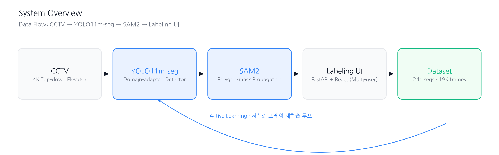
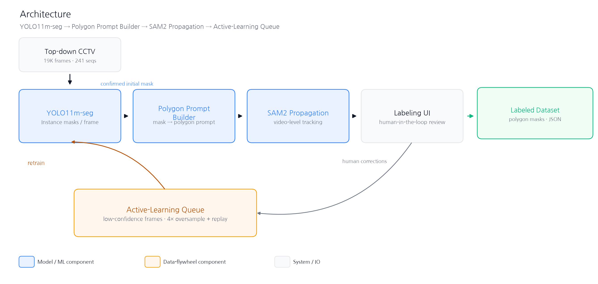
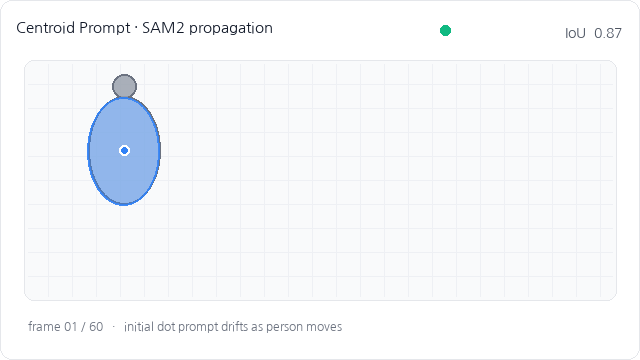
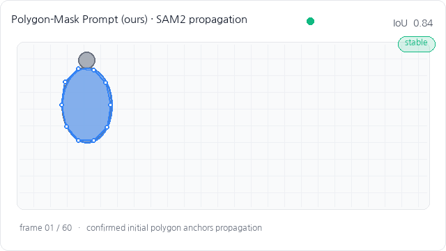
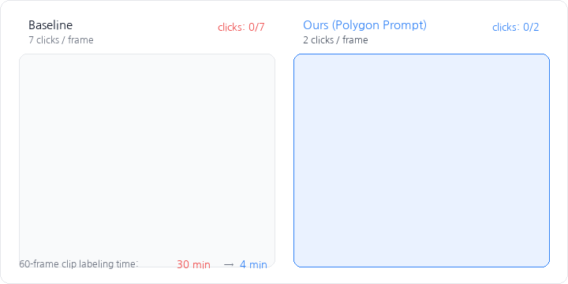
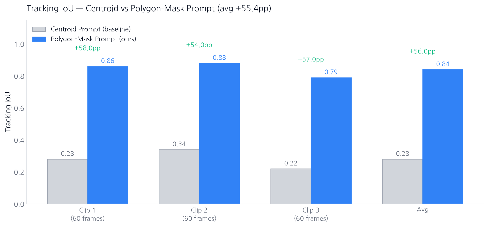

스마트 엘리베이터 프로젝트에서 요구되는 학습 데이터는 탑뷰(top-down) 시점의 4K CCTV 영상이었다. 이 도메인은 COCO 계열 pretrained detector가 가정하는 시점(정면·측면)과 완전히 달라 기성 모델의 검출 성능이 심각하게 떨어지고, 그에 따라 수작업 라벨링 비용이 폭발적으로 증가하는 구조적 병목이 있었다.
SAM2 기반의 마스크 전파(video propagation)를 사용하더라도, centroid-point prompting은 마스크 초기 상태가 부정확할 때 클립 전체에 걸쳐 드리프트가 누적되는 불안정성을 보였다.





최종적으로 사내 다중 사용자 웹 라벨링 툴로 배포되어, 탑뷰 CCTV 도메인에 대한 학습 데이터 확보 파이프라인의 인력 병목을 실질적으로 완화하였다.